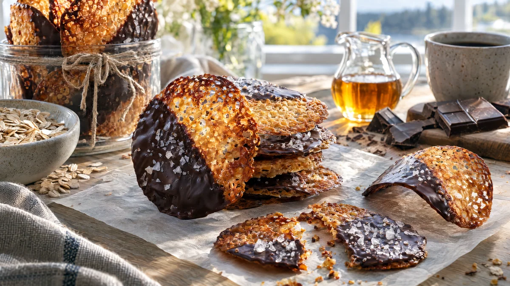

RESTFEST · RECEPTFika & bakning
Spröda havreflarn doppade i mörk choklad
Havregryn, sirap, socker och växtbaserat margarin blir tunna, gyllene flarn som är nästan genomskinliga, som spets. Halva flarnet doppas i mörk choklad och får några flingsaltkorn. Elegant till kaffet och fint att ge bort i en burk med band.
- Förberedelse
- 15 min
- Tillagning
- 20 min (i omgångar)
- Portioner
- ca 30 flarn
- Nivå
- Medelsvårt
 Det här behöver du
Det här behöver du
Tryck på + vid det du behöver köpa.
Flarn
Chokladdopp
Gör så här
- Sätt ugnen på 200 grader. Klä två plåtar med bakplåtspapper.
- Smält margarinet i en kastrull. Ta kastrullen från värmen och rör ner havregryn, socker, sirap, havredryck, mjöl, bakpulver och salt.
- Klicka ut små högar, 1 tsk vardera, med minst 8 cm mellanrum. Flarnen flyter ut mycket, så lägg högst 8 per plåt.
- Grädda en plåt i taget i mitten av ugnen i 5–6 minuter, tills flarnen är jämnt gyllenbruna och spetsiga. Håll koll, de går fort från gyllene till brända.
- Låt flarnen svalna på plåten i 2–3 minuter, tills de är fasta nog att lyfta. Flytta dem till ett galler med en tunn stekspade. Fastnar de, ställ in plåten i ugnen i 30 sekunder.
- Smält två tredjedelar av chokladen i en skål över sjudande vatten. Ta av skålen och rör ner resten av chokladen tills den har smält. Då blir chokladen blank när den stelnar.
- Doppa halva flarnet i chokladen, låt överskottet rinna av och lägg det på bakplåtspapper. Strö över några flingsaltkorn.
- Låt chokladen stelna i rumstemperatur, eller 10 minuter i kylen.
Dekoration och servering
- För ett restaurangmässigt utseende: lägg de varma flarnen över en kavel så att de stelnar i en böjd form.
- Stapla flarnen lätt förskjutet på ett fat, så att mönstret i spetsen syns.
- Förvara dem i en lufttät burk, där de håller sig spröda i ungefär en vecka.
- Servera till kaffe, glass eller chokladmoussen i recept 9.
Mått och ugnstemperaturer
Måtten är svenska (dl, msk, tsk, krm). Ugnstemperaturerna gäller vanlig ugn med över- och undervärme; med varmluft, sänk med 20 grader.